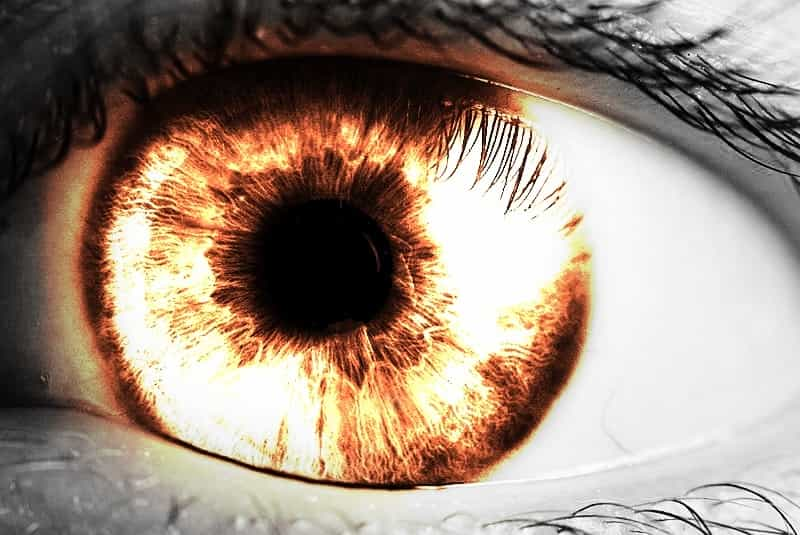
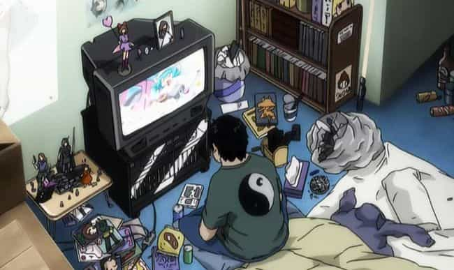

Corey is an iconoclast and the author of 'Man's Fight for Existence'. He believes that the key to life is for men to honour their primal nature. Visit his new website at primalexistence.com


Any man who has taken the red pill is acutely aware of the reality of what modern dating and society holds for him. But he, along with many others who remain ignorant, are not necessarily aware of the way they’ve been changing as a response to the unnatural conditions they find themselves in. While many have changed for the better after having been enlightened, there are many others who continue to struggle by being stuck in a single phase—perhaps for the rest of their lives.
What I want to demonstrate here are the seven different unhealthy phases that a man may find himself in and offer a proper alternative for him to follow. As a personal note, I have gone through all of these phases throughout the different stages of my life with the exception of number seven.

When a man realizes how senseless the world really is and wakes up to the fact that all the promises regarding women and society have been false, he will be forced to take the pill of bitter cynicism. He did what he was told, he fulfilled his role, but he was only rewarded with betrayal. This is a man who had been screwed many times over or had a single traumatic experience that flipped his life upside down. The word “love” is now but a sad joke for him; he opened up in vulnerability only to be taken advantaged of. Toyed and humiliated, he vows to shelter the human side of himself with both the shield of indifference and the sword of contempt. Trust no longer comes easily (if at all), and he is determined to never let himself be hurt again.

For some men, cynicism and bitterness is not enough. This is a man that refuses to be on the receiving end of the hostile society that he finds himself in; he wants to hit back. Whether it be silent and hidden or out in the open for all to see, he wages his war against the world that has forsaken him. In his mind, there is nothing for him to gain by conforming to a sick and decadent society that treats men as second-rate citizens. He rages on both as a reaction and as a way of validating his own existence in a world that continually seeks to destroy him. But what does he seek to accomplish through his offense? When and how will his war end?
A man who’s already been through the stage of cynicism and rage might decide to morph himself into a pseudo-psychopath who will take what he can by whatever means necessary. Fed up with the bullshit rules he’s been told to follow, he creates his own. He probably would have been a decent man in a normal society, but he now has no qualms about doing whatever it takes in his quest for money, sex, and power.
Society and women used and abused him when he was young and naive, now it’s his turn to return the favour. He will adopt the dark triad traits and mimic the true psychopaths because he knows that it’s what turns women on and brings success. He will create a fake persona to mask his true motives and deliberately repress any and all feelings of guilt, pity, and remorse. He knows from experience that if he allows his tender feelings to surface, he will lose the game and suffer the consequences—he knows that his opponents will have no mercy for his weakness. Although he may become successful beyond his imagination, his victory is a hollow one for his humanity remains trapped within his own facade.
Some men are just too weak and undetermined to fight for themselves. They either don’t know of other options or are just completely lost in a confusing world that seeks to exploit them for the entirety of their lives. But having been raised in a feminized society that offers no masculine guidance—perhaps with an ineffectual father or no father at all—you can’t blame them too much. He was told be nice and he did—with no gains. He was told lies that women wanted nice guys to be their prince charming, but saw that they treated him like a toad instead. He suffers in silent loneliness.
He might then tell himself lies that he would eventually find a nice woman whom he could call his wife, only to marry an aging slut who viewed him as a soft target to exploit. Having lost his hard-earned wealth, perhaps his children, and whatever is left of his dignity, he feels as though there is no place for him in this world. As a result, suicide rate for men continues to be many times the rate of women’s. No amount of “talking about feelings” or pills will change that as long as the fundamental issues are not addressed.

When the world becomes too uncomfortable to bear, and the reality too harsh and painful, some men will choose to retreat and withdraw themselves from society. More and more men today are choosing the false reality of television, video games, porn, spectator sports, etc. as an escape from their pitiful lives while being devoid of any real-world desire for accomplishments and self-actualization.
This trend is nowhere more prevalent than in Japan where around two thirds of young men identify themselves as Herbivore men who have forsaken women and marriage while there exists almost a million Hikikomoris—grown-up men without jobs who live locked up in their rooms, spending their entire life on mangas, video games, and the internet—shunning the society as a whole.
While Japan is an extreme case, more and more men in other Asian countries and the West are witnessing a rise of similar trends where men are simply giving up and living isolated lives. While living in Canada, I myself have witnessed many teenage boys and young men with no confidence, no energy, and no self-assurance to survive in the real world on their own.

“If you can’t beat them, join them” is the motto of the men who decide to the kowtow to the feminist imperative in hopes of being rewarded with a pat on the head. These are your white-knights, male feminists, and all other loser simps who relish in being treated as pawns while accepting (and even promoting) being openly cucked. If you think about it, these are grown men who haven’t yet matured from the time when they were little boys seeking their mother’s approval for being ‘good’. With feminist social conditioning from home, school, and the media, they haplessly believe that their toady behaviour will eventually be rewarded just like in the Disney movies while their goddesses are indulging in alcohol-fueled orgy.
Whatever women do, they’re forever in denial and relentless in their defense. These men are so desperate for females to validate their existence that they will demonstrate their loyalty by embrace being “friends” with women while acting as the stooges for the social disease that is feminism. These men don’t seem to be aware of the fact that their desperate groveling isn’t improving their lives in any way.
As I’ve noted in a previous article of mine, Western societies as a whole have begun the systematic emasculation of men. For the weaker men who lack masculine guidance, it is far easier to throw away the burden of masculinity completely by erasing whatever little is left of it from their lives. Normal masculinity is considered toxic and dangerous, and is constantly under attack, so why would these feeble “men” continue to carry on that kind of a burden?
For the more dysfunctional and unstable ones, it’s not enough to reject masculinity from their thoughts and behaviours: they feel that it is necessary to change their sex by taking hormones and cutting off their genitals. And when we live in a mad society that encourages this kind of mental sickness as being normal, you can expect to see more of these freaks to emerge in the coming future.

The alternative to the above phases is to live your life with a revived form of masculine virtue: the neomasculinity. With neomasculinity, although you acknowledge the harsh reality that men face today you don’t resort to playing the victim nor do you allow yourself to be consumed by anger. Instead, you practice a healthy dose of realism and see the problems that men face today as challenges to overcome. There is no room for hopelessness and self-pitying circle jerk in neomasculinity, you are to make the best of the lot you’ve been given—weakness and surrender is not an option.
We are at a war for our very identity and existence, but at the same time, we should remember to guard our humanity lest we end up becoming just like the hateful monsters we fight. Men throughout history have always unveiled their best side through their brave struggles, and the struggle we face today is our chance to shine and prove our worth.
Read More: The Ugly Reality Of Dating Japanese Women